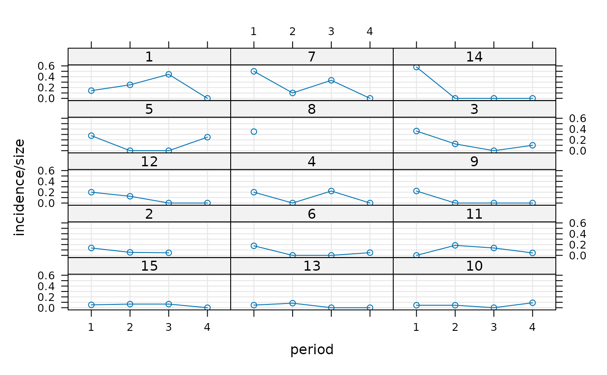

Fitting Generalized Linear Mixed-Effects Models
glmer.RdFit a generalized linear mixed-effects model (GLMM). Both fixed
effects and random effects are specified via the model formula.
Usage
glmer(formula, data = NULL, family = gaussian
, control = glmerControl()
, start = NULL
, verbose = 0L
, nAGQ = 1L
, subset, weights, na.action, offset, contrasts = NULL
, mustart, etastart
, devFunOnly = FALSE)Arguments
- formula
a two-sided linear formula object describing both the fixed-effects and random-effects part of the model, with the response on the left of a
~operator and the terms, separated by+operators, on the right. Random-effects terms are distinguished by vertical bars ("|") separating expressions for design matrices from grouping factors.- data
an optional data frame containing the variables named in
formula. By default the variables are taken from the environment from whichlmeris called. Whiledatais optional, the package authors strongly recommend its use, especially when later applying methods such asupdateanddrop1to the fitted model (such methods are not guaranteed to work properly ifdatais omitted). Ifdatais omitted, variables will be taken from the environment offormula(if specified as a formula) or from the parent frame (if specified as a character vector).- family
- control
a list (of correct class, resulting from
lmerControl()orglmerControl()respectively) containing control parameters, including the nonlinear optimizer to be used and parameters to be passed through to the nonlinear optimizer, see the*lmerControldocumentation for details.- start
a named list of starting values for the parameters in the model, or a numeric vector. A numeric
startargument will be used as the starting value oftheta. Ifstartis a list, thethetaelement (a numeric vector) is used as the starting value for the first optimization step (default=1 for diagonal elements and 0 for off-diagonal elements of the lower Cholesky factor); the fitted value ofthetafrom the first step, plusstart[["fixef"]], are used as starting values for the second optimization step. Ifstarthas bothfixefandthetaelements, the first optimization step is skipped. For more details or finer control of optimization, seemodular.- verbose
integer scalar. If
> 0verbose output is generated during the optimization of the parameter estimates. If> 1verbose output is generated during the individual penalized iteratively reweighted least squares (PIRLS) steps.- nAGQ
integer scalar - the number of points per axis for evaluating the adaptive Gauss-Hermite approximation to the log-likelihood. Defaults to 1, corresponding to the Laplace approximation. Values greater than 1 produce greater accuracy in the evaluation of the log-likelihood at the expense of speed. A value of zero uses a faster but less exact form of parameter estimation for GLMMs by optimizing the random effects and the fixed-effects coefficients in the penalized iteratively reweighted least squares step. (See Details.)
- subset
an optional expression indicating the subset of the rows of
datathat should be used in the fit. This can be a logical vector, or a numeric vector indicating which observation numbers are to be included, or a character vector of the row names to be included. All observations are included by default.- weights
an optional vector of ‘prior weights’ to be used in the fitting process. Should be
NULLor a numeric vector.- na.action
a function that indicates what should happen when the data contain
NAs. The default action (na.omit, inherited from the ‘factory fresh’ value ofgetOption("na.action")) strips any observations with any missing values in any variables.- offset
this can be used to specify an a priori known component to be included in the linear predictor during fitting. This should be
NULLor a numeric vector of length equal to the number of cases. One or moreoffsetterms can be included in the formula instead or as well, and if more than one is specified their sum is used. Seemodel.offset.- contrasts
an optional list. See the
contrasts.argofmodel.matrix.default.- mustart
optional starting values on the scale of the conditional mean, as in
glm; see there for details.- etastart
optional starting values on the scale of the unbounded predictor as in
glm; see there for details.- devFunOnly
logical - return only the deviance evaluation function. Note that because the deviance function operates on variables stored in its environment, it may not return exactly the same values on subsequent calls (but the results should always be within machine tolerance).
Value
An object of class merMod (more specifically,
an object of subclass glmerMod) for which many
methods are available (e.g. methods(class="merMod"))
Note
In earlier version of the lme4 package, a method argument was
used. Its functionality has been replaced by the nAGQ argument.
Details
Fit a generalized linear mixed model, which incorporates both
fixed-effects parameters and random effects in a linear predictor, via
maximum likelihood. The linear predictor is related to the
conditional mean of the response through the inverse link function
defined in the GLM family.
The expression for the likelihood of a mixed-effects model is an
integral over the random effects space. For a linear mixed-effects
model (LMM), as fit by lmer, this integral can be
evaluated exactly. For a GLMM the integral must be approximated. The
most reliable approximation for GLMMs
is adaptive Gauss-Hermite quadrature,
at present implemented only for models with
a single scalar random effect. The
nAGQ argument controls the number of nodes in the quadrature
formula. A model with a single, scalar random-effects term could
reasonably use up to 25 quadrature points per scalar integral.
Examples
## generalized linear mixed model
library(lattice)
xyplot(incidence/size ~ period|herd, cbpp, type=c('g','p','l'),
layout=c(3,5), index.cond = function(x,y)max(y))

(gm1 <- glmer(cbind(incidence, size - incidence) ~ period + (1 | herd),
data = cbpp, family = binomial))
#> Generalized linear mixed model fit by maximum likelihood (Laplace
#> Approximation) [glmerMod]
#> Family: binomial ( logit )
#> Formula: cbind(incidence, size - incidence) ~ period + (1 | herd)
#> Data: cbpp
#> AIC BIC logLik -2*log(L) df.resid
#> 194.0531 204.1799 -92.0266 184.0531 51
#> Random effects:
#> Groups Name Std.Dev.
#> herd (Intercept) 0.6421
#> Number of obs: 56, groups: herd, 15
#> Fixed Effects:
#> (Intercept) period2 period3 period4
#> -1.3983 -0.9919 -1.1282 -1.5797
## using nAGQ=0 only gets close to the optimum
(gm1a <- glmer(cbind(incidence, size - incidence) ~ period + (1 | herd),
cbpp, binomial, nAGQ = 0))
#> Generalized linear mixed model fit by maximum likelihood (Adaptive
#> Gauss-Hermite Quadrature, nAGQ = 0) [glmerMod]
#> Family: binomial ( logit )
#> Formula: cbind(incidence, size - incidence) ~ period + (1 | herd)
#> Data: cbpp
#> AIC BIC logLik -2*log(L) df.resid
#> 194.1087 204.2355 -92.0543 184.1087 51
#> Random effects:
#> Groups Name Std.Dev.
#> herd (Intercept) 0.6418
#> Number of obs: 56, groups: herd, 15
#> Fixed Effects:
#> (Intercept) period2 period3 period4
#> -1.3605 -0.9762 -1.1111 -1.5597
## using nAGQ = 9 provides a better evaluation of the deviance
## Currently the internal calculations use the sum of deviance residuals,
## which is not directly comparable with the nAGQ=0 or nAGQ=1 result.
## 'verbose = 1' monitors iteratin a bit; (verbose = 2 does more):
(gm1a <- glmer(cbind(incidence, size - incidence) ~ period + (1 | herd),
cbpp, binomial, verbose = 1, nAGQ = 9))
#> start par. = 1 fn = 186.7231
#> At return
#> eval: 18 fn: 184.10869 par: 0.641839
#> (NM) 20: f = 100.035 at 0.65834 -1.40366 -0.973379 -1.12553 -1.51926
#> (NM) 40: f = 100.012 at 0.650182 -1.39827 -0.993156 -1.11768 -1.57305
#> (NM) 60: f = 100.011 at 0.649102 -1.39735 -0.999034 -1.13415 -1.57634
#> (NM) 80: f = 100.01 at 0.647402 -1.39987 -0.987353 -1.12767 -1.57516
#> (NM) 100: f = 100.01 at 0.64823 -1.4 -0.991134 -1.12755 -1.58048
#> (NM) 120: f = 100.01 at 0.647543 -1.39916 -0.991869 -1.12839 -1.57993
#> (NM) 140: f = 100.01 at 0.647452 -1.39935 -0.991366 -1.12764 -1.57936
#> (NM) 160: f = 100.01 at 0.647519 -1.39925 -0.991348 -1.12784 -1.57948
#> (NM) 180: f = 100.01 at 0.647513 -1.39924 -0.991381 -1.12783 -1.57947
#> Generalized linear mixed model fit by maximum likelihood (Adaptive
#> Gauss-Hermite Quadrature, nAGQ = 9) [glmerMod]
#> Family: binomial ( logit )
#> Formula: cbind(incidence, size - incidence) ~ period + (1 | herd)
#> Data: cbpp
#> AIC BIC logLik -2*log(L) df.resid
#> 110.0100 120.1368 -50.0050 100.0100 51
#> Random effects:
#> Groups Name Std.Dev.
#> herd (Intercept) 0.6475
#> Number of obs: 56, groups: herd, 15
#> Fixed Effects:
#> (Intercept) period2 period3 period4
#> -1.3992 -0.9914 -1.1278 -1.5795
## GLMM with individual-level variability (accounting for overdispersion)
## For this data set the model is the same as one allowing for a period:herd
## interaction, which the plot indicates could be needed.
cbpp$obs <- 1:nrow(cbpp)
(gm2 <- glmer(cbind(incidence, size - incidence) ~ period +
(1 | herd) + (1|obs),
family = binomial, data = cbpp))
#> Generalized linear mixed model fit by maximum likelihood (Laplace
#> Approximation) [glmerMod]
#> Family: binomial ( logit )
#> Formula: cbind(incidence, size - incidence) ~ period + (1 | herd) + (1 |
#> obs)
#> Data: cbpp
#> AIC BIC logLik -2*log(L) df.resid
#> 186.6383 198.7904 -87.3192 174.6383 50
#> Random effects:
#> Groups Name Std.Dev.
#> obs (Intercept) 0.8911
#> herd (Intercept) 0.1840
#> Number of obs: 56, groups: obs, 56; herd, 15
#> Fixed Effects:
#> (Intercept) period2 period3 period4
#> -1.500 -1.226 -1.329 -1.866
anova(gm1,gm2)
#> Data: cbpp
#> Models:
#> gm1: cbind(incidence, size - incidence) ~ period + (1 | herd)
#> gm2: cbind(incidence, size - incidence) ~ period + (1 | herd) + (1 | obs)
#> npar AIC BIC logLik -2*log(L) Chisq Df Pr(>Chisq)
#> gm1 5 194.05 204.18 -92.027 184.05
#> gm2 6 186.64 198.79 -87.319 174.64 9.4148 1 0.002152 **
#> ---
#> Signif. codes: 0 ‘***’ 0.001 ‘**’ 0.01 ‘*’ 0.05 ‘.’ 0.1 ‘ ’ 1
## glmer and glm log-likelihoods are consistent
gm1Devfun <- update(gm1,devFunOnly=TRUE)
gm0 <- glm(cbind(incidence, size - incidence) ~ period,
family = binomial, data = cbpp)
## evaluate GLMM deviance at RE variance=theta=0, beta=(GLM coeffs)
gm1Dev0 <- gm1Devfun(c(0,coef(gm0)))
## compare
stopifnot(all.equal(gm1Dev0,c(-2*logLik(gm0))))
## the toenail oncholysis data from Backer et al 1998
## these data are notoriously difficult to fit
if (FALSE) { # \dontrun{
if (require("HSAUR3")) {
gm2 <- glmer(outcome~treatment*visit+(1|patientID),
data=toenail,
family=binomial,nAGQ=20)
}
} # }